FFT と IFFT
FFT-and-IFFT
サマリー
FFT（高速フーリエ変換）は、時間領域の信号を周波数領域に変換します。IFFT（逆FFT）は周波数領域から時間領域に変換します。非周期な信号のFFTは、結果の周波数スペクトルの漏れが起こることがあります。Originは、漏れを軽減するためにいくつかの窓関数をサポートしています。
学習する項目
このチュートリアルで以下のことを行います：
- 異なる窓関数を使用してFFTを実行する
- スペクトルにより元の信号を修復する
- FFTガジェットを使用してFFTを実行する
FFT ROIツール
FFT ROIツールは、信号データのグラフ上に矩形を配置し、その中のデータにFFTを実行するために使用されます。このツールは、データのFFTによる効果を素早く観察するためにとても便利です。
以下では、1つのデータに対してFFT ROIツールを使用する方法を紹介します。
- 新しいワークブックを作成し、<Origin インストールディレクトリ>\Samples\Signal Processing\Chirp Signal.dat をインポートします。
- 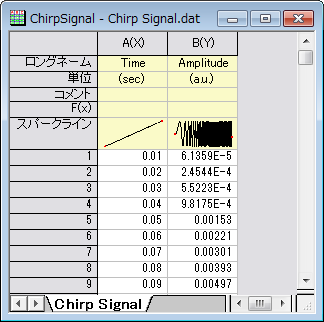
- B列を選択し、メニューから作図：線図：折れ線を選択してグラフを作図します。
- 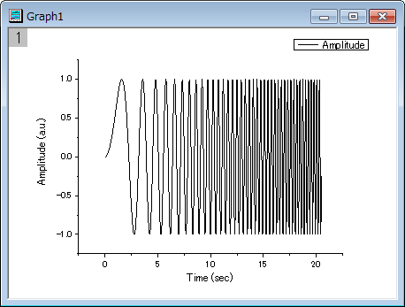
- グラフをアクティブにして、ガジェットメニューのFFT ROIツールを選択してダイアログを開きます。
- 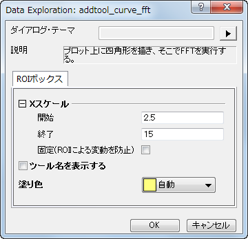
- デフォルトのまま、OKボタンをクリックし、グラフに矩形（ROI）を配置します。
- 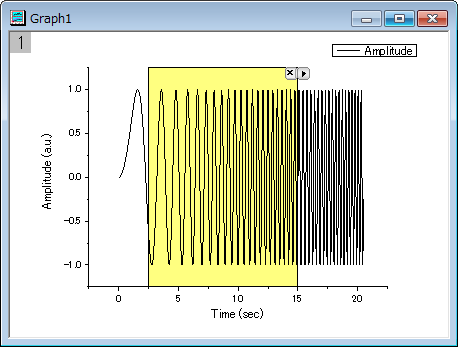
- 選択されたデータにするFFT結果をグラフ化した、FFTPREVIEWグラフが作成されます。
- 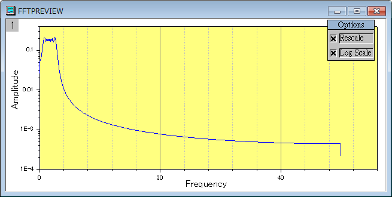
- 異なる部分を覆うために、データの矩形を左右に移動することが可能です。また、矩形の幅を変更して、カバーするデータポイント数を変えることもできます。ROIを移動したりサイズを変更すると、FFTPREVIEW は更新されます。
FFT
このサンプルでは、漏れを抑制するために窓関数の変更を行います。
- 上のセクションのFFT ROIツールで使用したデータと同じデータを使用します。
- B列を選択して、解析：信号処理：FFT：FFTを選択し、Signal Processing\FFT: fft1ダイアログを開きます。
- ダイアログの自動プレビューチェックボックスにチェックを付け、右パネルでプレビューできるようにします。ウィンドウ法をBlackmanにし、その他の設定はデフォルトのままにします。右パネルで、振幅の鋭くて幅の狭いピークスペクトルがあることがわかります。Blackmanウィンドウは非常によく、漏れを抑制しています。
- 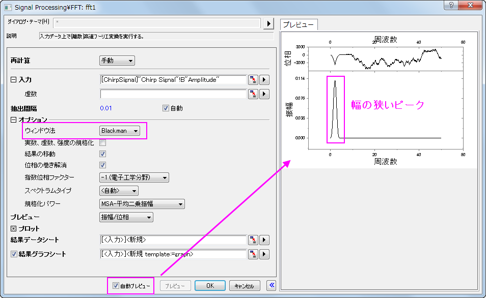
- OKボタンをクリックして、グラフとデータを含む結果を出力します。
- 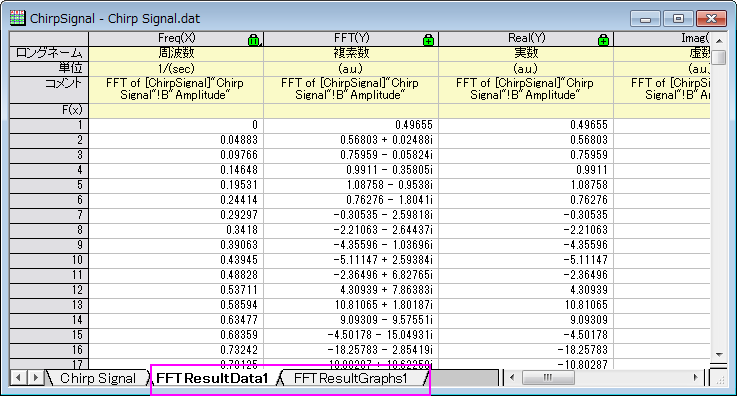
IFFT
このサンプルでは、FFT結果から信号を復元する方法を示します。そのためには、FFTおよびIFFT双方の設定を同じにし、スペクトルタイプは両側、ウィンドウ法は四角形にする必要があります。
- 上のFFT結果から始めます。緑の鍵のアイコンをクリックします。パラメータの変更を選択してダイアログを再度開きます。
- 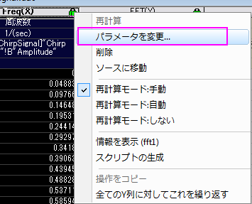
- 上述したように、スペクトルタイプは両側、ウィンドウ法は四角形に設定する必要があるので、これらを変更します。
- 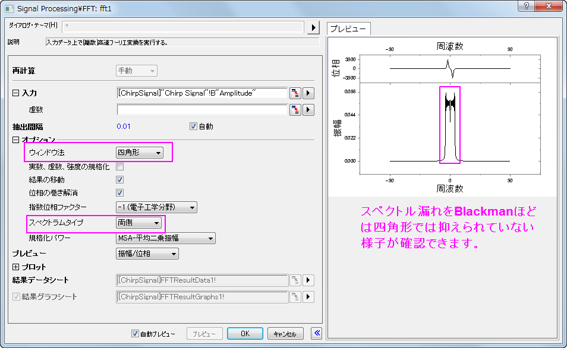
- OKをクリックすると結果が変更されます。
- FFTResultData1を開きます。1列が複素数で、1列は実数、もう1列は虚数であることがわかります。ここでは、複素数データを使用します（実数と虚数データを使用することもできます）。この列を選択して、解析：信号処理：FFT：IFFTを選択し、Signal Processing\FFT: ifft1ダイアログを開きます。（もし、実数と虚数データ列を使用する場合、入力データとして実数データを選択し、虚数として虚数データ列を選択します。）ダイアログの自動プレビューチェックボックスにチェックを付け、右パネルでプレビューできるようにします。
- 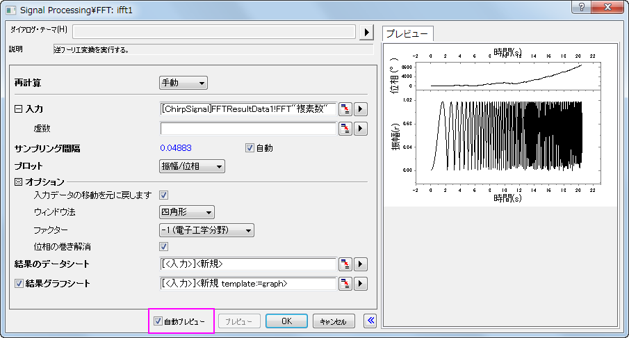
- デフォルトの設定のまま、OK をクリックします。
- IFFTの結果（ワークシートIFFTResultData1）と元のデータを比べてみましょう。下図のように、2つのデータがほどんど同じであることがわかります。
- 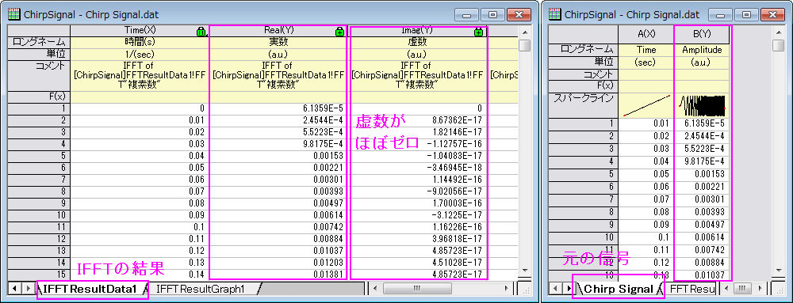